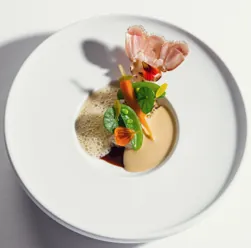
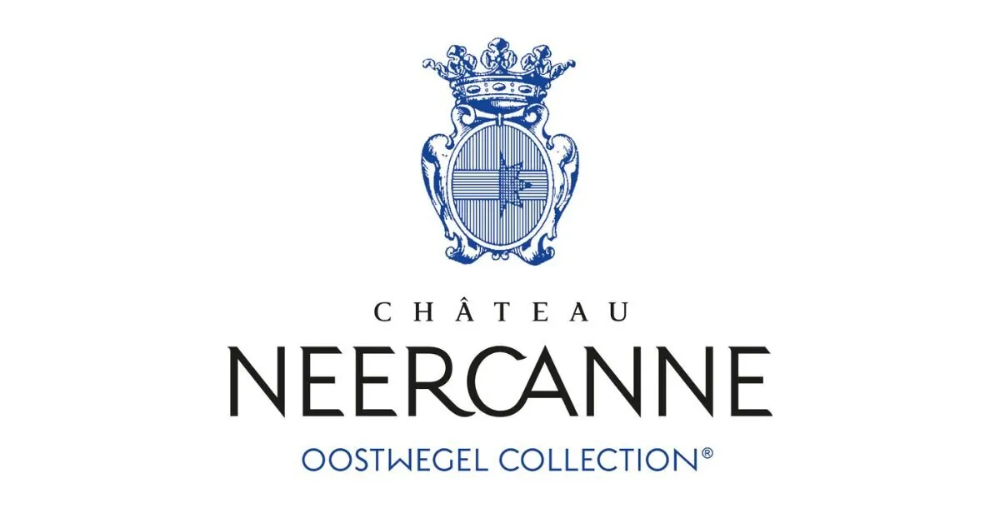
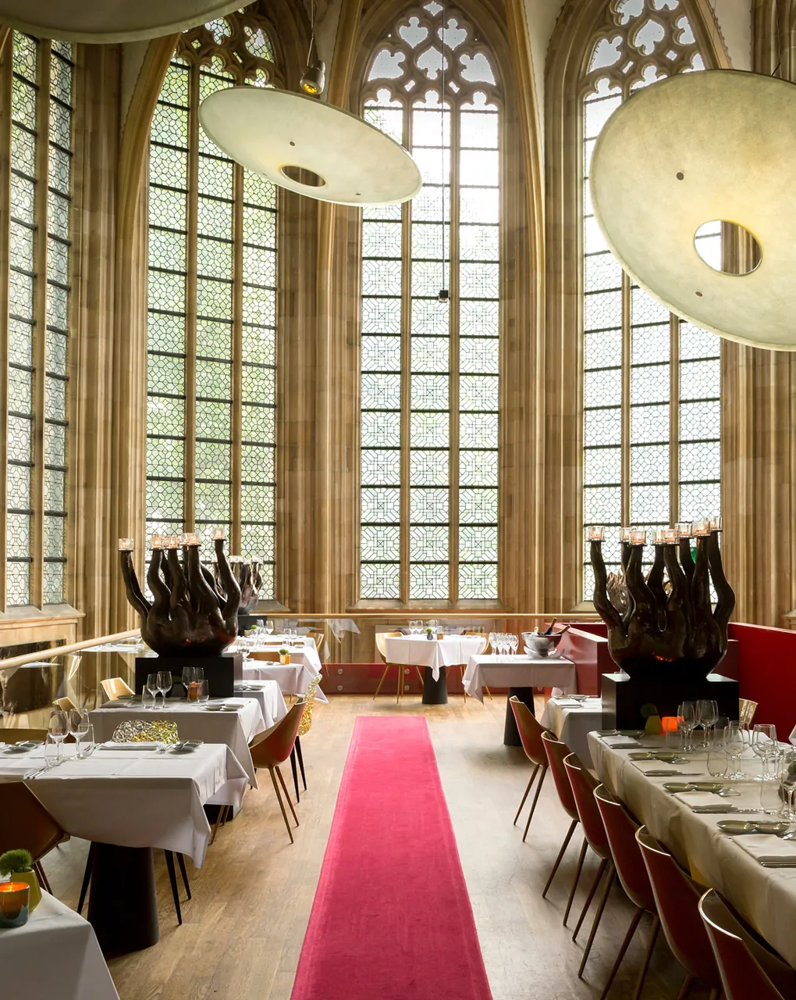

50.8794°N · 5.6736°E
Two nights anchored by a Saturday table.
A weekend designed around the 2-Michelin-star Saturday dinner at Ralf Berendsen — the one true walking-distance bed, character castles a 20-minute taxi away, six day-trip shapes within 30 km, and the 2026 conference calendar if you want a working anchor.
2 ★ · Relais & Châteaux
Service ends 21:00
Ralf Berendsen sits inside Domaine La Butte aux Bois, holding two stars and a Relais & Châteaux address [1][2]. Service Tue–Sat 18:30–21:00; Sunday and Monday dark [1].
That single fact ripples through the whole weekend — it forces a Saturday anchor, rules out a Sun- or Mon-arrival package, and makes a Friday-night second-Michelin stop the natural way to fill the other dinner.
Tasting-menu price, wine-pairing cost, dress code and reservation lead time at the restaurant itself are not yet confirmed — call ahead before booking the room.
The clean shape
Lodging — collapses to a binary

Domaine La Butte aux Bois
The only true walking-distance bed — zero metres, the restaurant is in the building. 62 rooms across Le Manoir / La Villa / La Forêt and a Shiseido Spa Aquamarijn on-site [3][4].
The estate sells gastronomic-stay packages that bundle the dinner with the room — the cleanest way to solve the two-inventory problem (the table and the room book separately otherwise) [3].
1.1 KM ALONG THE N78
Hotel Admiraal
The only ~€85 walking alternative, 1.1 km along the N78 — a 14-minute pavement walk past a 70 km/h regional road [5].
Fine in dry shoes, marginal in rain. Check the forecast before committing.
If you want the castle stay — the taxi-radius alternative

Château Neercanne
Relais & Châteaux and its own Michelin star on-site — makes the Friday second-Michelin idea trivial [8].

Kruisherenhotel
15th-century Gothic monastery in Maastricht's centre, converted into a design hotel — the bold-architecture choice [6].
1.9 KM · MOATED
Kasteel Pietersheim
Moated kasteel, 1.9 km from the restaurant; doubles as a Hoge Kempen gateway with 8 waymarked loops [9][10].
Day-trip menu — six shapes within 30 km
Note · Drielandenpunt at ~36 km falls just outside the 30 km radius and should not make the cut [18].
The day-of-week trap
Sunday closes the restaurant and Maastricht's Sint-Servaas treasury — but it opens Tongeren's antique market, the only day it runs [16]. Monday closes the restaurant, the Bonnefantenmuseum, Bokrijk, LABIOMISTA and the Jenevermuseum — at that point only Hoge Kempen and the Valkenburg caves still work.
Clean shape → FRI arrive · SAT day-trip+dinner · SUN Tongeren-then-home
For working travellers — 2026 conference anchors
ICT&health
BNAIC
Booking sequence
Order matters — reshuffle from the table outward.
- Book the gastronomic-stay package on labutteauxbois.be — bundles room + dinner, solves the two-inventory problem [3].
- If that's sold out, book Ralf Berendsen directly for a Saturday at 18:30 — then chase a room.
- Room fallback: Hotel Admiraal (1.1 km walk) or Château Neercanne (taxi + own Michelin star) [5][8].
- Pick the day-trip last — the radius doesn't change, the weather forecast does.
- Check your day of arrival against the matrix above — Sun arrival kills the restaurant, Mon arrival kills four museums.